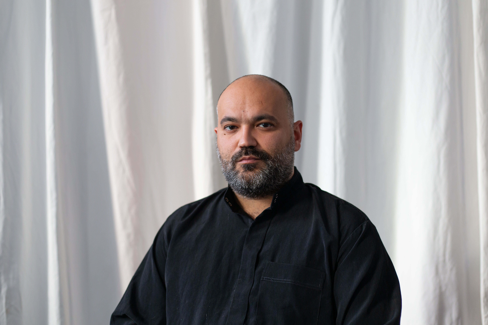

Vienna, Austria
Cultural manager, creative researcher, curator, artist, and musician working at the intersection of contemporary art, social design, and cultural diplomacy in Vienna.

Photo: Danny Nedkova
About
Pavel Naydenov is a cultural manager, creative researcher, curator, artist, and musician born in Bulgaria. Since 2016 he has been based in Vienna, Austria, where he completed a Master's degree in Social Design — Art as Urban Innovation at the Universität für Angewandte Kunst Wien.
His multidisciplinary practice spans cultural management, artistic research, choral conducting, and curatorial work. He has collaborated with leading cultural institutions and festivals in Vienna including Wiener Festwochen, Vienna Art Week, Parallel Vienna, WienWoche, and the Urbanize Festival, as well as with MA7 — the City of Vienna's Department of Culture.
As Director of the Bulgarian Cultural Institute Wittgenstein House in Vienna, he works to position Bulgarian culture as a vital presence in the city's cultural calendar. He is the founder and conductor of Construction Choir Collective — an international ensemble representing over twenty nationalities — and of N Choir, an Austrian ensemble specialising in Bulgarian choral music, laureate of international choral festivals.
From 2020 to 2023, he managed the annual cultural programme of Wild im West, a venue for urban culture, music, performance and outdoor cinema supported by the City of Vienna, where he organised 3–5 weekly events with audiences of up to 700 people and presented more than 40 Bulgarian artists based in Austria.
Vienna, Austria
Education
Universität für Angewandte Kunst Wien (University of Applied Arts Vienna)
Class of Prof. Dr. Brigitte Felderer
Academy of Music, Dance and Fine Arts "Prof. Asen Diamandiev", Plovdiv
Specialisations: Pop & Jazz Singing; Choral Conducting (class of Assoc. Prof. Dr. V. Geleva)
Secondary School "Otets Paisiy", Vratsa
Specialised school of music, choreography and fine arts
Selected Work
Curatorial & Exhibitions
Artistic & Performance
Cultural Management
Academic & Research
Contact